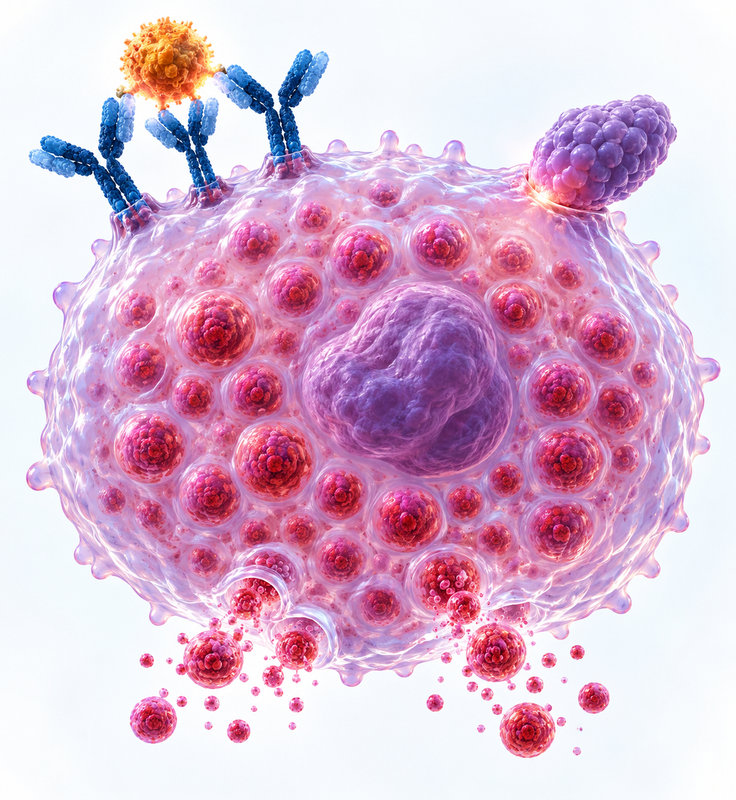
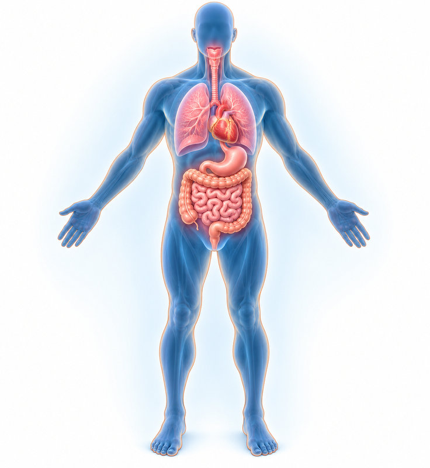
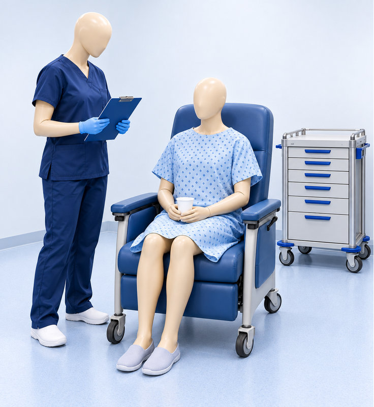

약물 알레르기
초진의 핵심
약물 알레르기 초진 — 피부 표현형에서 검사·의뢰까지

CHAPTER 01 · 약물 반응 의심
진단은 약물 때문일 수 있다는 의심부터
최근 한 달의 약물력과 증상 발생 시점을 재구성한다
최근 1개월의 약물 복용력을 조사한다. 바로 직전 며칠간의 약만 묻지 않는다.
이전 약물 과민반응의 약 이름·반응·재노출 여부를 함께 기록한다.
약물 투여에서 증상 시작까지의 간격과 피부 병변의 형태를 연결한다.
의심 약물을 평가하고 반응의 중증도에 맞춰 응급처치·전문가 의뢰를 진행한다.
약물 과거력의 조사·기록과 신속한 사후 응급처치가 강의의 강조점이다.
CHAPTER 02 · 원인 약물
흔한 원인 약물부터 구체적으로 묻는다
감기약이라는 묶음 대신 실제 성분을 조사한다
Aspirin과 NSAIDs가 흔하다. 감기약·진통제의 여러 이름에 포함될 수 있다.
Penicillin·cephalosporin, 특히 cefaclor, sulfonamide가 소개되었다.
Carbamazepine 등 항전간제와 항결핵제를 조사한다.
전신마취의 신경근 차단제, 마약성 진통제, CT 조영제를 포함한다.
심한 피부반응의 원인 평가에서도 기억할 약물이다.
개원가에서 사용하는 근육이완제로, 흔한 원인 약물에 포함되었다.
원칙적으로 모든 약이 원인이 될 수 있으므로 목록 밖의 복용력도 빠뜨리지 않는다.
CHAPTER 03 · 반응 유형
약물이상반응과 과민반응을 구분한다
ADR Type A·B와 면역반응의 틀
용량·약리작용에 의한 예측 가능한 반응으로 약 90%. 강의의 예는 항히스타민제 복용 후 졸림이다.
면역·특이체질에 의한 예측 불가 반응으로 약 10%. 아나필락시스·중증 피부약물이상반응(SCAR)이 임상적으로 중요하다.
Gell–Coombs: I형 IgE, II형 항체 매개 세포독성, III형 면역복합체, IV형 지연성 T세포 반응.
CHAPTER 04 · 시간과 피부 형태
투약 후 시간과 피부 형태를 연결한다
즉시형·중간 시점·지연형의 표현형
두드러기·아나필락시스. 혈관부종도 즉시형에서 중요하다.
두드러기·혈관부종, 피부발진·발열이 나타날 수 있다.
지연성 피부발진·SCAR. 반구진성 발진과 수포성 발진을 구분한다.
약물 알레르기는 피부로 말한다: 발진 종류의 정확한 평가가 원인 약물을 찾는 출발점이다.
CHAPTER 05 · 두드러기·혈관부종
두드러기와 혈관부종을 알아본다
즉시형 반응에서도 IgE·비IgE 경로가 모두 가능하다

모기 물린 듯 융기된 병변이 이동한다. 일반적으로 한 부위에 24시간을 넘겨 머무르지 않는다.
더 깊은 조직을 침범한다. 눈꺼풀·입술뿐 아니라 기도, 위장관도 침범할 수 있다.
IgE 매개는 감작 후 재노출이 중요하다. 비IgE 반응은 약물이 직접 비만세포를 자극해 첫 투여에도 나타날 수 있다.
IgE 예: β-lactam·백신·백금계 / 비IgE 예: opioid·조영제·근육이완제·vancomycin·paclitaxel·ciprofloxacin.
CHAPTER 06 · 아나필락시스
아나필락시스는 여러 장기 증상의 조합
피부·호흡·순환·위장관 증상을 한꺼번에 평가한다

두드러기·혈관부종 85~90%, 홍조 45~55%, 발진 없는 가려움 2~5%가 강의 표에 제시되었다.
호흡곤란·천명 45~50%, 상기도 혈관부종 50~60%, 비염 15~20%.
어지럼·실신·저혈압이 나타날 수 있다. 빈맥과 함께 피부·기관지 증상을 살핀다.
오심·구토·설사·경련성 복통. 대개 여러 증상이 복합적으로 나타나는 증후군으로 설명되었다.
피부 증상만 진정시키는 조치와 생명을 구하는 초기 치료를 구분한다.
CHAPTER 07 · 실신 감별
미주신경성 실신과 감별한다
국소마취·시술 전후 저혈압과 의식 변화의 해석
창백·발한·차고 축축한 피부·저혈압, 서맥이 단서다. 피부 발진·기관지경련은 없고, 오심은 있어도 복통은 없다는 감별점이 제시되었다.
혈관 확장에 따른 저혈압을 보상하며 빈맥이 흔하다. 급성기에 채혈한 혈청 tryptase 상승은 진단을 지지한다. 강의의 채혈 시점은 1~2시간, 4시간 이내다.
Lidocaine 국소마취 상황에서도 증상·맥박·피부·호흡 소견으로 반응을 분류한다.
CHAPTER 08 · 응급치료
응급치료의 중심은 Epinephrine 근육주사
강의 교재에 제시된 성인 사용법
1:1,000 용액(1 mg/mL) 0.3~0.5 mL, 즉 0.3~0.5 mg을 근육주사한다. 준비된 용액을 다시 희석하라는 뜻은 아니다.
교재는 5~15분 간격으로 2~3회 반복을 제시했다. 전원과 환자 감시를 함께 진행한다.
항히스타민제는 가려움·두드러기 조절의 보조이며 생명구조 치료를 대체하지 않는다. 스테로이드의 역할에는 논란이 있다고 설명했다.
심정지의 IV bolus 방식과 혼동하지 않는다. 지속 저혈압의 IV 투여는 감시하 별도 방식으로 설명되었다.
CHAPTER 09 · 지연형 발진
지연형 발진의 형태가 다음 행동을 정한다
반구진성 발진·고정약진·농포성 발진
발적을 뜻하는 macule과 융기된 papule이 함께 보인다. 가장 흔한 지연형이며 대개 투약 후 3일 이상 지나 발생한다. 바이러스 발진과 감별한다.
같은 약에 노출될 때 같은 부위·같은 형태로 반복된다. 반복 후 과색소침착이 남는 것이 단서다.
전반적 홍반 위 작은 농포가 급성으로 퍼지고 고열·호중구 증가가 특징이다. 강의에서는 적절한 치료 후 2~3주 내 탈락하며 호전되는 경과를 설명했다.
단순 발진인지, 전신 증상·장기 침범을 동반한 SCAR인지 반드시 구분한다.
CHAPTER 10 · DRESS
DRESS: 발진과 내부 장기 침범
발열·지연성 피부발진·림프절병증의 조합
투약 2주~2개월 후 나타날 수 있다. 발열·지연형 발진·림프절병증이 주요 소견이며 림프절병증은 80~90%로 제시되었다.
호산구 증가·비정형 림프구·백혈구 증가, 간염, 신염·간질성 폐렴 등 장기 침범을 함께 평가한다.
노출 1,000~10,000회당 1회, 사망률 약 10%로 주로 간부전과 관련된다고 소개되었다. 조기에 약을 중단하고 입원 평가로 연결한다.
점수표를 외우기보다 발열·림프절·호산구·발진·장기 침범이 함께 있는 상황에서 먼저 의심한다.
CHAPTER 11 · 수포·점막 침범
수포·점막 침범은 중증 반응의 단서
표피 박리 면적에 따른 SJS/TEN 스펙트럼
| 다형홍반(EM) | 전형적인 3층 표적 병변. 표피 박리는 0%로 비교표에 제시되며, 고전형은 단순포진과의 연관성을 감별한다. |
|---|
| SJS | 교재 비교표는 표피 박리 1~10%, SJS–TEN 중첩은 10~30%, TEN은 >30%로 제시한다. |
|---|
| 점막·안구 | SJS는 입술·혀·생식기 점막 침범, 발열·권태감, Nikolsky 징후를 보일 수 있다. 안구 침범은 >60%로 설명되었다. |
|---|
| 빠른 원인 평가 | 투약부터 발진까지 5~28일이 중요한 단서다. ALDEN은 약물 잠복기·잔존·과거 반응·중단 후 경과·알려진 연관·다른 원인을 평가한다. |
|---|
수포·피부 박리·점막 침범이 보이면 단순 약발진으로 경과만 보지 않고 상급병원으로 신속히 연결한다.
CHAPTER 12 · SJS/TEN
SJS/TEN은 초기 중단과 집중치료로 연결
강의가 설명한 치료 시기와 감염 위험의 차이
원인 약물을 빨리 찾아 끊는 것이 핵심이다. 상급병원 전원을 서두른다.
초기에 고용량 스테로이드를 짧게 사용하는 접근과 cyclosporine·IVIG·TNF-α 차단제 치료가 소개되었다. 늦거나 긴 투여의 감염 위험도 강조했다.
화상에 준한 수액·체온 유지·이차감염 감시, 수포 지붕 보존과 안과·피부과·이비인후과 협진이 제시되었다. Silver sulfadiazine은 피하도록 설명했다.
광범위 표피 괴사·박리와 다발 점막 궤양, 고열·패혈증 위험이 중요하다. 이미 광범위 박리된 단계의 스테로이드 금기 가능성을 별도로 설명했다.
같은 약도 T세포 면역반응의 아형에 따라 반구진·수포·농포 등 다른 표현형을 만들 수 있다.
CHAPTER 13 · 검사 선택
검사는 병력 뒤에, 반응 유형에 맞춘다
즉시형과 지연형의 검사 선택
| 즉시형 · 피부 | 단자시험 후 필요 시 피내시험. Penicillin·cephalosporin·국소마취제·근육이완제 등에서 사후 원인 확인에 사용한다. |
|---|
| 즉시형 · 혈액 | 특이 IgE는 안전하고 약물 복용의 영향을 덜 받지만 대상 약물이 한정된다. UniCAP: penicilloyl G/V, ampicilloyl, amoxicilloyl, cefaclor. |
|---|
| 지연형 | 지연 판독 피내시험·첩포시험이 소개되었다. 표준화와 임상 유용성이 제한되며, 작은 노출로 재반응할 위험을 고려해 제한적으로 시행한다. |
|---|
| 연구 검사 | 호염기구 활성검사·림프구 변환/활성검사는 주로 연구 목적으로 소개되었다. 병력이 진단의 첫 단계다. |
|---|
검사 음성·양성 하나를 시간 관계와 피부 표현형에서 떼어 해석하지 않는다.
CHAPTER 14 · 피부시험
피부시험은 사후 진단과 선별을 구분한다
강의의 항생제 사전 피부검사 설명
β-lactam 투여 후 즉시형 과민반응이 실제 있었는지 원인 확인을 위해 피부시험을 고려한다.
일률적인 투여 전 β-lactam 피부시험은 권하지 않는다고 설명했다. 위양성이 많은 선별검사로 쓰지 않는다는 취지다.
HLA-B*58:01–allopurinol, HLA-A*31:01–carbamazepine이 제시되었다. 후자는 동남아시아의 검사·양성 시 회피 설명과 한국 대립유전자 빈도 차이가 함께 언급된다.
사전 검사라는 한 단어에 모든 약물·검사의 의미를 묶지 않는다.
CHAPTER 15 · 경구유발시험
경구유발시험은 원인과 대체약을 찾는다
심한 반응에 대비한 환경에서 시행한다

다른 검사로 증명하기 어려운 경우 원인 확인·원인 약물 배제, 또는 대체 약물의 내약성 평가를 위해 시행한다.
Penicillin·cephalosporin·aspirin·NSAIDs 등이 소개되었다. 특히 NSAID 대체약을 찾는 목적이 흔하다.
다시 심한 반응이 일어날 수 있으므로 응급 구조 약물과 대기 의료진이 필요하다. 개별 약의 허용 여부를 카드에 기록해 진료를 연결한다.
NSAID 과민반응은 피부검사·혈액검사로 대신 확인할 방법이 없다는 점을 강조했다.
CHAPTER 16 · β-lactam 교차반응
β-lactam 교차반응은 곁사슬을 본다
세대명보다 R1 side chain 유사성이 중요한 설명
| Aminobenzyl | Ampicillin, cephalexin, cefaclor, cephradine, loracarbef: 같은 곁사슬 그룹으로 높은 교차반응 가능성. |
|---|
| Hydroxy-aminobenzyl | Amoxicillin, cefadroxil, cefprozil, cefatrizine: 높은 교차반응 가능성. |
|---|
| Ceftazidime–aztreonam | R1 곁사슬이 같아 두 약 사이의 교차반응에 주의한다. 일반적인 penicillin–aztreonam 관계와 구분한다. |
|---|
| 다른 계열·구조 | Carbapenem 교차반응은 낮다고 소개되었다. 강의는 실제 외래에서 구조를 일일이 판단하기 어려워 가능한 β-lactam 회피·전문가 평가를 강조했다. |
|---|
공유 구조는 확률을 높이는 단서이며, 구조표만으로 개인의 내약성을 100% 확정하지 않는다.
CHAPTER 17 · NSAID 반응 유형
NSAID: 교차반응형과 선택형을 구분
Aspirin도 과민반응 관점에서 함께 점검한다
COX 억제로 prostaglandin이 줄고 leukotriene 경로가 증가하는 기전. 다른 NSAID와 aspirin에도 반응할 수 있다.
Acetaminophen과 선택적 COX-2 억제제는 교차반응이 덜하지만 용량·개인차에 따라 반응할 수 있다. 유발시험으로 허용 약을 찾는 접근을 설명했다.
특정 NSAID 하나에만 반응하면 SNIUAA 같은 선택적 면역반응형을 생각한다. 구조가 다른 약을 복용할 수도 있으나 과거 내약성이 평생 안전을 보장하지 않는다.
과거에 잘 복용했던 약이라는 사실만으로 현재 과민반응을 배제하지 않는다 — 연자 Q&A.
CHAPTER 18 · 계열별 교차반응
교차반응은 약물 계열마다 다르다
반응의 기전·노출 이력·표현형을 함께 본다
Vancomycin–teicoplanin, fluoroquinolone 내부 교차반응이 소개되었다. 같은 계열이라는 이유만으로 일괄 안전을 가정하지 않는다.
방향족 약물 사이의 교차반응이 높아 필요한 경우 비방향족 valproate·levetiracetam·gabapentin 등이 대안으로 소개되었다.
Taxane은 용매의 직접 탈과립으로 초기 투여에도, platinum은 반복 노출 후 IgE 감작으로 반응할 수 있다고 설명했다.
반복 투여로 중증도가 달라지거나 즉시형·지연형이 바뀔 수 있다. 항암제 반응에서는 상급병원의 탈감작 접근이 소개되었다.
예전에 가벼운 발진이었다는 설명이 다음 노출의 중증도를 보장하지 않는다.
CHAPTER 19 · 연자 Q&A
연자 Q&A: 외래의 대체약 상담
강의 후 답변으로 제시된 의견을 구분해 읽는다
연자 Q&A반응 중증도와 R1 유사성에 따른 적극적 사용 접근도 답변했다. 다만 현실적으로 구조 확인이 어려워 가능한 회피가 가장 안전하다는 입장을 함께 제시했다.
연자 Q&A교차반응성만 보면 celecoxib가 낮은 편이나, 해열·단순 진통에서는 과거 내약성이 있는 acetaminophen이 실용적이라고 답했다. 전문의 감독 유발시험으로 내약성을 확인하는 접근을 제시했다.
연자 Q&A고정약진의 급성 염증은 가라앉아도 색소침착은 오래 남을 수 있다. Pheniramine 정맥주사는 저혈압 위험 때문에 천천히 투여하며 상태·혈압을 관찰한다고 답했다.
초기 대응 후 원인·대체약을 명확히 기록하고 전문가·지역의약품안전센터와 진료를 연결한다.
CHAPTER 20 · 연자 Q&A
연자 Q&A: 대체약 질문과 감작 검사
원인 약물의 해석과 대체약 상담을 구분한다
Penicillin·cephalosporin 알레르기의 대체약 질문에는 두 계열을 제외한 quinolone·macrolide 계열 등을 답변했다.
NSAID 알레르기에서 tramadol 사용을 묻는 질문에, 연자는 마약성 진통제라는 점을 들어 사용할 수 있다고 답했다.
MAST 양성은 그 항원에 대한 감작을 뜻한다. 양성이라는 사실이 두드러기의 원인이라는 뜻은 아니며, 노출과 증상의 시간 관계가 맞아야 임상 알레르기로 해석한다고 답했다.
이 슬라이드는 강의 후 연자 Q&A의 답변을 약물별·검사별 맥락에 따라 정리한 것이다.
CHAPTER 21 · 핵심 복습
강의의 핵심을 진료의 연결점으로
약물 알레르기 초진 — 피부 표현형에서 검사·의뢰까지
Penicillin·cephalosporin 알레르기의 대체약 질문에는 두 계열을 제외한 quinolone·macrolide 계열 등을 답변했다.
NSAID 알레르기에서 tramadol 사용을 묻는 질문에, 연자는 마약성 진통제라는 점을 들어 사용할 수 있다고 답했다.
이 슬라이드는 강의 후 연자 Q&A의 답변을 약물별·검사별 맥락에 따라 정리한 것이다.